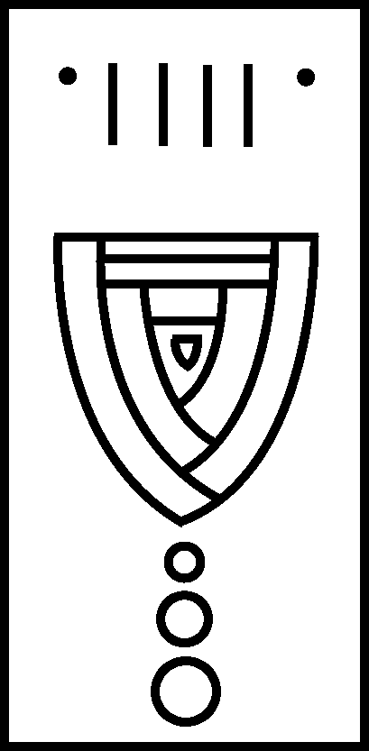
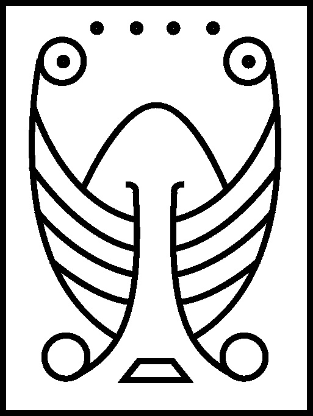

Lidem se zdá, �e �ivot jejich míjí v èase - v minulosti a budoucnosti. Ale bo se jen tak zdá: pravı �ivot lidskı nemíjí v èase, nıbr� v�dycky jest v tom neèasovém bodì, ve kterém minulost stıká se s budoucností, a jej� nesprávnì nazıváme pøítomností. V tomto neèasovém bodì pøítomnosti, a jen v tomto bodì, jest èlovìk svoboden, a proto jest v pøítomnosti, a jen v pøítomnosti, pravı �ivot èlovìkùv.
1.
2.
Není èasu
ani prostoru: i jednoho, i druhého je nám nutnì
potøebí jen proto, abychom mohli chápati pøedmìty. A
proto je velmi pochybeno
myslit, �e badání o hvìzdách, jejich� svìtlo
nás ještì nedošlo, a o stavu
slunce za miliony let a podobnì, jsou zamìstnání velmi
dùle�itá. V takovıch badáních
nejen �e není nic dùle�itého, ale ani nic
vá�ného. Vše to jest pouze prázdná
høíèka rozumu.
5.
Není li
èasu, jest jen okam�ik. A právì v nìm, v tomto
okam�iku, jest všechen náš �ivot. Proto jest tøeba vynalo�iti
všechny své síly
na tento jedinı okam�ik.
6.
Èas jest jen pro tìlesnı �ivot. Duchovní bytost èlovìkova je v�dy mimo èas. A mimo èas je proto, �e èinnost duchovní bytosti èlovìka otvírá se a zavírá jen na vìdomém úsilí. A vìdomé úsilí je v�dy mimo èas, proto�e pøestává v�dy na pøítomnosti, a pøítomnost není v èase.
2.
Nemù�eme si predstaviti �ivot po smrti a nemù�eme se upamatovati na �ivot pøed narozením, proto�e si nedovedeme nic pøedstavit mimo èas. A pøece známe nejlépe svùj �ivot mimo èas - v pøítomnosti.
3.
Naše
duše je vr�ena do tìla,
kde se shledává s èíslem, èasem a rozmìrem.
Uva�uje o tom, a nazıvá to
pøirozeností, nutností, a nemù�e myslit jináèe.
4.
Øíkáme, �e èas jde. To není správné. Jdeme my, a nikoli èas. Kdy� plujeme po øece, zdá se nám, �e jdou bøehy a nikoli loï, na ní� plujeme. Tak se má vìc i s èasem.
5.
1.
Schopnost pøipomenouti si minulé a pøedstaviti si budoucí dána jest nám jen proto, abychom, spravujíce se úvahami o tom aneb o onom, spolehlivìji mohli rozhodovat o skutcích pøítomnosti, nikoli však proto, abychom litovali minulého nebo pøipravovali budoucí.
2.
Èlovìk �ije jen v pøítomném okam�iku. Vše
ostatní buï ji� minulo, nebo je nejisto, zdali kdy nastane.
3.
Trápíme se jen proto minulım a kazíme sobì budoucnost, proto�e se málo zamìstnáváme pøítomnım. Minulé bylo, budoucího ještì není, jest jen pøítomné.
4.
Náš budoucí
stav bude se v�dy zdáti snem našemu nynìjšímu stavu.
Není dùle�ita délka �ivota, nıbr� hloubka jeho.
Nejedná se o prodlou�ení
�ivota, nıbr� o to, jak ne�íti v èase. A ne�ijeme v èase
jen tehdy, kdy� �ijeme
usilováním o dobro. Kdo tak �ije, neèiní si
otázky o èase. Dle Emersona.
5.
" �íti do veèera a do vìku"*) - znamená �íti tak, jako bys mìl ka�dou chvíli zemøít a proto nemohl vykonati leè vìci nejdùle�itìjší, a zároveò to znamená �íti tak, jako bys mohl pokraèovati v díle zapoèatém do nekoneèna.
Èas je za námi, èas je pøed námi. Jakmile zaèneš více pøemítati o tom, co bylo neb o tom co bude, pøijdeš o vìc hlavní: o pravı �ivot v pøítomnosti.
7.
Okam�ik jest jen okam�ik. Èlovìku zdá se bıt okam�ik tak malé dùle�itosti, �e jej pouští mimo, a pøec jen v nìm vìzí všechen jeho �ivot; jen v okam�iku pøítomnosti mù�e uplatniti to úsilí, jím� si dobıvá Království Bo�ího i uvnitø, i vnì sebe.
8.
Pøemoci
zlé návyky lze jen
dnes, ale nikoli zítra.
Nic nemá dùle�itosti kromì
toho, co konáme v pøítomné chvíli.
Dobøe je nemyslit na zejtøejší den; abychom
však naò nemyslili, na to jest jen
jedinı prostøedek: stále mysliti na to, zdali
plním dílo pøítnmného dne,
hodiny, minuty.
11.
Obtí�né jest uprostøed obcování s lidmi, ve chvílích, kdy se dáváš unášet myšlenkami na minulé a hudoucí, vzpomenout si, �e jest �ivot tvùj právì teï, v této chvíli pøítomnosti. A pøec, jak je dùle�ito a drahocenné na to vzpomínati! Hleï tomu navyknouti. Mnohého zla vyvaruje se èlovìk, nauèí-li se pamatovati si, �e jen pøítomnost je v �ivotì dùle�itá, �e jen ta jediná existuje. Vše ostatní je - sen.
12.
Jakmile jsi se pohrou�il v minu1ost a v budoucnost, vzdálil jsi se pøítomného �ivota, a hned se cítíš osiøelım, nevolnım, osamìlım.
13.
"Co je mravního trápení, a vše to proto,
abys za nìkolik minut
zemøel! Proè se tedy su�ovat?"
Nikoli, to není pravda. Tvùj �ivot jest nyní. Èasù
není, a nynìjší chvíle platí
za staletí, �iješ-li tuto chvíli s
Bohem.
14.
Øíká se: èlovìk není svoboden, proto�e vše, co dìlá, má svou pøíèinu v minulosti. Ale pùsobí v�dy jen v pøítomnosti, a pøítomnost je mimo èas - jest to jen bod, v nìm� dotıká se minulost budoucnosti. A proto je èlovìk v okam�iku pøítomnosti v�dy svoboden.
15.
Jen v pøítomnosti projevuje se svobodná bo�ská síla �ivota, a pmto èinnost pøítomnosti musí mít vlastnosti bo�ské, t. j. musí bıt rozumná a dobrá.
16.
Otázali se mudrce,
která vìc je nejdùle�itìjší, kterı èlovìk
je nejdùle�itìjší a která doba v �ivotì je
nejdùle�itìjší?
I odvìtil mudrc: "Nejdùle�itìjší vìc je, abychom �ili v
lásce se všemi
lidmi, proto�e v tom tkví jádro �ivota ka�dého
èlovìka."
"Nejdùle�itìjší èlovìk je ten, s kterım máš v tuto
pøítomnou chvíli
dìlati, proto�e nikdy nevíš, budeš-li mít ještì dìlati s
nìjakım jinım èlovìkem."
"Nejdùle�itìjiší èas je jen doba pøítomná,
ponìvad� jen v ní jest èlovìk
sebe mocen."
1.
Hlavní vìc v �ivotì jest láska. A milovati nelze ani v minulosti, ani v budoucnosti. Milovati lze jen v pøítomnosti, hned, tu chvíli.
2.
Jen kdy� neøídíš se ve svıch
skutcích ani minulostí, ani budoucností,
nıbr�
�ádostí své duše v pøítomnosti, mù�eš si
vésti s plnou láskou.
3.
Láska je projev bo�ské jsoucnosti, pro kterou neplatí èas, a proto se láska projevuje jen v pøítomnosti, hned, v ka�dou chvíli pøítomnosti.
4.
Není tøeba myslit na budoucnost, nıbr�
jen v pøítomnosti se sna�it, abys uèinil
radostnım �ivot sobì i druhım. "Zejtøek postará se
sám o sebe." To
jest hluboká pravda. Proto je také �ivot tak
krásnı, �e nevíš, èeho hude
potøebí v budoucnosti. Jednoho je vskutku potøebí a
hodí se v�dy: je to láska k
lidem v tuto chvíli.
5.
Milovat vùblec znamená konat dobro. Tak
všichni rozumíme lásce, a nelze jí
rozumìti jinak.
A láska není jen slovo, nıbr�
jsou to skutky, které dìláme pro blaho jinıch.
Rozhodne-li se èlovìk, �e je pro nìho lépe,
aby se zdr�el po�adavkù nejmenší
lásky v pøítomnosti pro jinou velikou lásku v
budoucnosti, oklamává buï sebe,
buï ostatní a nemá rád nikoho, kromì sebe
samého.
Není lásky v budoucnosti; jest jen
láska v pøítomnosti. Neplní-li èlovìk díla
lásky v pøítomnosti, není v nìm: lásky.
6.
Chceš dobra. Ale dobro mù�e bıt jen
nyní; v budoucnosti
nemù�e bıti dobra, proto�e není budoucna. Jest jen
pøítomnost.
7.
Neodkládej nikdy dobrého skutku,
mù�eš-li jej uèinit nyní, proto�e smrt se
neptá, uèinil-lis èi neuèinil, cos mìl uèinit. Smrt
neèeká na nikoho a na nic.
A proto je pro èlovìka nejdùle�itìjší na svìtì to co dìlá
hned.
8.
Kdybychom jen mìli èastìji na mysli, �e se
ztracenı èas nikdy nevrátí, �e se
spáchané zlo nikdy nedá odèinit, konali bychom
dobra více a páchali bychom ménì
zla.
9.
Neváhejme bıti spravedlivımi a
útrpnımi. Neèekejme na obzvláštní
utrpení naše
nebo, cizích lidí. �ivot je krátkı, a proto
pospìšme si potìšit srdce svıch
spolupoutníkù na této krátké pouti.
Pospìšme si bıti dobrımi.
10.
Pomni, �e mù�eš-li vykonat dobrı skutek, prokázati lásku nìkomu, je tøeba to uèiniti hned, proto�e mine pøíle�itost a nevrátí se.
11.
Dobøí lidé zapomínají na to, co
uèinili dobrého: jsou tak zamìstnáni tím, co
právì konají, �e nemyslí na to,co
ji� vykonali.
12.
�ivot nyní, v pøítomnosti, jest stav, za kterého �ije v nás Bùh. A proto je pøítomnı okam�ik v �ivotì dra�ší, ne� vše ostatní. Vynalo� yšechny síly své duše na to, aby ti nadarmo neušel tento okam�ik, a aby neukryl pøed tebou toho Boha, jen� se mohl v tobì projevit.
1.
"Teï
mohu na èas od toho upustit, co bych mìl uèinit a èeho
�ádá mé svìdomí, proto�e
nejsem hotov," namlouvá si èlovìk. "Zatím se pøipravuji,
však nastane
doba, kdy zaènu �ít u� úplnì v souhlase se svım
svìdomím."
L�ivost tohoto uva�ování
sp,oèivá v tom, �e èlovìk upouští od �ivota v
pøítomnosti, jedinì skuteèného �ivota, a
pøenáší jej do budnuona, aèkoli
budoucnost nenále�í jemu.
Aby neupadl v takové pokušení, èlovìk
má chápat a na pamìti míti, �e k
pøípravám není kdy, �e má �ít, co
nejlépe mù�e, jsa takısi, jakım jest, �e
zdokonalování, jeho� je mu nutnì potøebí, jest jen
jediné, a to zdokonalování v
lásce, a toto
zdokonalování �e se
dokonává jen v pøítomnosti. A proto má
�íti èlovìk bez odkladu ka�dou chvíli
všemi svımi silami k tomu, aby plnil urèení, pro
které pøišel na svìt, a které
jedinì mù�e mu poskytnout pravého štìstí. Èlovìk
má tak �íti proto, �e ví, �e
mù�e bıti ka�dou chvíli zbaven mo�nosti splniti svùj
úkol.
2.
"Udìlám to, a� budu velkı." - "Budu
tak �ít, a� skonèím svá
studia, a� se o�ením." - "Zaøídím si tak; svùj
�ivot, a� budu mít
dáti, a� o�ením syna, neb a� se jinam pøestìhuji, neb a�
zestárnu.
Tak hovoøívají i dìti, i dorostlí, i starci, a
nikdo z nich neví, do�ije-li se
veèera. Nikdo nemù�e nikterak vìdìt, podaøí-li se mu èi
nepodaøí provésti svùj
úmysl, nepøekazí-li mu to smrt.
Jen jedné vìci nemù�e smrt pøekazit: abychom ka�dou
chvíli, pokud jsme �ivi,
vìnovali plnìní vùle Bo�í- abychom milovali lidi.
3.
Øíkáme a myslíme si èasto:
"Nemohu konati vše, co konati mám, v té situaci,
ve které jsem nyní." Jak je to nesprávné. I
ta vnitøní práce, na které se
�ivot zavírá a otvírá, ta je v�dycky
mo�ná. Jsi uvìznìn, jsi nemocen, jsi
zbaven mo�nosti pustit se v jakoukoli zevnìjší tinnost,
urá�ejí tì, su�ují tì -
ale vnitøní tvùj �ivot je ve tvé moci: v
myšlenkách mù�eš vyèítat, odsuzovat,
závidìt, nenávidìt lidí, ale v myšlenkách
mù�eš také tyto city potlaèit a
zamìnit je dobrımi. A tak je ka�dá chvíle
tvého �ivota tvá, a nikdo ti ji
nemù�e vzít.
4,
Øíkaje: "Nemohu to udìlat," vyjadøuji se nesprávnì. Mám øíci, �e jsem to nemohl udìlat døíve. �e mohu v ka�dou chvíli pøítomnosti udìlati sám s sebou vše, co chci, vím beze vší pochybnosti. A je dobøe èlovìku, �e to ví.
5.
Uvìdomìní si své churavosti, starost, abych ji odstranil, hlavnì však myšlenka, �e jsem nyní churav a �e nemohu nic dìlat, ale �e to udìlám, a� se bohdá uzdravím - vše to je veliké pokušení. V�dy� to je toté�, jako kdybych øekl: "Nechci toho, co mi bylo dáno, ale chci to, èeho není." V�dycky je mo�ná radovati �e z toho, co nyní jest, a dìllati z toho, co jest, pokud síly staèí, vše, co se dìlati dá.
6.
Ka�dá
pøítomná hodina jest kritická, rozhodná
hodina. Zapiš
si do svého. srdce, �e ka�dı den je nejlepší den
celého roku, ka�dá hodina �e
je nejlepší hodina a ka�dı okam�ik nejlepší
okam�ik. Je nejlepší proto, �e ti
jedinì nále�í.
7.
Chceš-li co nejlépe pro�íti svùj
�ivot, budi� toho pamìtliv, �e všechen �ivot
jest jen v pøítomnosti, a hledi�, aby tvé
konání v ka�dou chvíli pøítomnosti
bylo co nejlepší.
8.
Necítíš se dobøe, a zdá se ti, �e je to tím, �e nemù�eš �íti tak, jak bys chtìl, �e bys snáze vykonal, co za svou povinnost pova�uješ, kdyby byl �ivot tvùj jinı. To není pravda. Máš vše, po èem tou�íš. V ka�dou chvíli svého �ivota mù�eš uèiniti to nejlepší, seè jen jsi.
9.
V �ivotì, v nynìjším �ivotì nemù�e bıti nic lepšího nad to, ne� co jest. Pøáti si jiného, ne� co jest - Jest rouhaèství.
10.
Veliká,
znamenitá, dùle�itá díla, která mohou
bıt
ukonèena a� v budoucnosti - vše to nejsou pravá díla, na
slávu Bo�í podniknutá.
Vìøíš-li v Boha, budeš vìøiti v �ivot v pøítomnosti,
budeš konati ta díla,
která se dají úplnì ukonèiti v pøítomnosti.
11.
Nejvìtší sblí�ení s Bohem jest nejvìtší soustøedìní se v pøítomnosti, a naopak: èím více se obíráš minulostí nebo budoucností, tím více se vzdaluješ Boha.
12.
"Memento mori, pomni na smrt" - veliké to
slovo. ., Kdybychom mìli
stále na pamìti, �e nevyhnutelnì a brzo zemøeme, byl by všechen
náš �ivot zcela
jinı. Ví-li èlovìk, �e za pùl hodiny zemøe, jistì nebude
dìlat nic daremného,
ani pošetilého, ani - a to je hlavní vìc - nic
špatného v této pùlhodinì. A
není-li pùlstaletí, je� tì snad od smrti dìlí,
toté�, co pùlhodina?
1.
Nikdy nemù�eme znáti všecky následky svıch skutkù, proto�e jsou nekoneèné v nekoneèném vesmíru a v nekoneèném èase.
2.
Mù�eš-li pøehlédnouti všechny následky své èinnosti, vìz, �e je tato èinnost nicotná.
3.
Lidé øíkají: "Nelze �ít, nevíme-li, co nás oèekává, Jest tøeba konat pøípravy k tomu, co bude," To není pravda. Skuteènì dobrı �ivot bıvá právì ten, pøi nìm� nemyslíš na to, co bude s tvım tìlem, nıbr� jen na to, èeho je ti potøebí pro duši nyní. A pro duši jest potøebí jen jednoho: èiniti to, co spojuje mou duši se všemi lidmi a s Bohem.
4.
Naše skutky nynìjška,
této chvíle, je
majetek náš, ale co z nich pojde, to je vìc Bo�í.
5.
�ije duchovním �ivotem,
t. j. ve spojení s Bohem, èlovìk
nemù�e sice znáti následky svıch skutkù, ale
ví bezpeènì, �e následky ty budou
blahodárné.
6.
Skutek, vykonanı beze všeho
uva�ování o mo�nıch následcích jen
proto, aby se
vyplnila vùle Bo�í, jest nejlepší skutek, kterı
mù�e èlovìk vykonat.
7.
Kdykoli rozva�uješ o následcích své èinnosti, v�dy cítíš svou slabost a nicotnost; ale, jakmile si pomyslíš, �e máš plniti hned vùli toho, jen� tì poslal, pocítíš volnost, radost a sílu.
8.
Myslí-li èlovìk na to, co pojde z toho, co koná, koná to co koná, jistì jen pro sebe.
9.
Odmìna spravedlivého �ivota není v budoucnu, nıbr� v pøítomnu. Tu chvíli èiníš dobøe, a tu chvíli je ti dobøe. A èiníš-li dobøe, nemohou bıt ani následky nedobrımi.
1.
Motáme se v myšlenkách o budoucím �ivotì. Tá�eme se sebe, co bude po smrti? Ale na to nelze se tázat proto, �e �ivot a budoucnost, to� protimluv: �ivot jest jen v pøítomnu. Nám se sice zdá, �e byl a bude, ale �ivot jen jest. Tøeba jest øešit otázku nikoliv o budoucnu, nıbr� o tom, jak máme �íti v pøítomnu, nyní.
2.
Vìzíme v�dy v nevìdomosti o
tìlesném �ivotì, proto�e tìlesnı �ivot všecek plyne v
èase, a my nemù�eme znáti
budoucnosti.
Ale v oblasti duchovního �ivota není budoucnosti a proto
se neznámost našeho
�ivota umenšuje tou mìrou, kterou náš �ivot
pøechází od tìlesného v duchovní,
tou mìrou, kterou �ijeme v pøítomnu.
3.
Práci nám svìøenou máme
vykonávati stejnì poctivì a bezvadnì, a� u� chováme
blahou nadìji, �e se jednou
staneme andìly, neb a� vìøíme, �e jsme byli kdysi
mìkkıši.
4.
Hlavní otázka našeho �ivota toèí se jen okolo toho, konáme-li v tu krátkou lhùtu svého �ivota, která nám jest popøána, to, èeho chce na nás Ten, Jen� nás poslal na svìt. Konáme-li to?
5.
Èím více se �ivot prodlu�uje, a zvláštì �ivot dobrı, tím více slábne vıznam èasu a zajímavost otázky o tom, co bude. Èím jsi starší, tím rychleji ubíhá èas, tím ménì a ménì dùle�itosti má pro tebe to, co "bude", a víc a více tì zajímá to, co "jest".
6.
Mù�eš-li se duchem
povznésti nad prostor
a èas, ocítáš se ka�dou chvíli ve
vìènosti.
